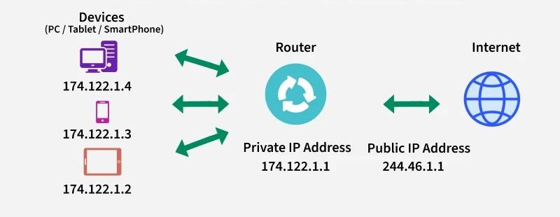

ترجمة عناوين الشبكة (NAT)
مقدمة في ترجمة عناوين الشبكة
ترجمة عناوين الشبكة (Network Address Translation - NAT) هي تقنية تستخدم في شبكات الحاسوب لتعديل معلومات عنوان IP في رؤوس حزم البيانات أثناء عبورها جهاز توجيه أو جدار حماية. تسمح هذه التقنية لعدة أجهزة في شبكة محلية بالاتصال بالإنترنت باستخدام عنوان IP عام واحد فقط، مما يساعد في التغلب على مشكلة نقص عناوين IPv4 العامة وتوفير طبقة إضافية من الأمان.
ظهرت تقنية NAT في أواخر التسعينيات كحل مؤقت لمشكلة نفاد عناوين IPv4، ولكنها أصبحت الآن جزءًا أساسيًا من معظم الشبكات الحديثة. على الرغم من أن IPv6 يوفر مساحة عناوين أكبر بكثير، إلا أن NAT لا تزال تستخدم على نطاق واسع لأسباب أمنية وإدارية.
كيف تعمل ترجمة عناوين الشبكة؟
لفهم كيفية عمل NAT، دعنا نتخيل سيناريو بسيطًا: لديك شبكة منزلية تحتوي على عدة أجهزة (أجهزة كمبيوتر، هواتف ذكية، أجهزة لوحية) متصلة بموجه (راوتر). يخصص الموجه عناوين IP خاصة لكل جهاز (عادة في نطاق 192.168.x.x أو 10.x.x.x)، ولكن الموجه نفسه لديه عنوان IP عام واحد فقط مخصص من مزود خدمة الإنترنت.
عندما يرسل جهاز في شبكتك المحلية طلبًا إلى الإنترنت، يقوم الموجه بتنفيذ الخطوات التالية:
- يستقبل الموجه الحزمة من الجهاز المحلي، والتي تحتوي على عنوان IP المصدر الخاص بالجهاز (مثل 192.168.1.5).
- يقوم الموجه بتغيير عنوان IP المصدر في الحزمة من العنوان الخاص للجهاز إلى عنوان IP العام الخاص بالموجه.
- يقوم الموجه أيضًا بتسجيل هذه الترجمة في جدول NAT الخاص به، حيث يحفظ معلومات عن الاتصال (عنوان IP المصدر الأصلي، رقم المنفذ المصدر، عنوان IP الوجهة، رقم المنفذ الوجهة).
- يرسل الموجه الحزمة المعدلة إلى الإنترنت.
عندما يتلقى الموجه ردًا من الإنترنت:
- يفحص الموجه جدول NAT الخاص به لتحديد أي جهاز في الشبكة المحلية كان قد أرسل الطلب الأصلي.
- يقوم الموجه بتغيير عنوان IP الوجهة في الحزمة من عنوان IP العام الخاص بالموجه إلى عنوان IP الخاص بالجهاز المحلي.
- يرسل الموجه الحزمة المعدلة إلى الجهاز المحلي.
هذه العملية تحدث بسرعة كبيرة وبشكل شفاف للمستخدم، مما يسمح لعدة أجهزة بالاتصال بالإنترنت في وقت واحد باستخدام عنوان IP عام واحد فقط.
أنواع ترجمة عناوين الشبكة
هناك عدة أنواع من ترجمة عناوين الشبكة، كل منها له استخدامات وميزات مختلفة:
1. ترجمة عناوين الشبكة الأساسية (Basic NAT)
تقوم ترجمة عناوين الشبكة الأساسية بترجمة عناوين IP فقط، دون تغيير أرقام المنافذ. هذا النوع من NAT نادر الاستخدام اليوم، حيث أنه يتطلب عنوان IP عام منفصل لكل اتصال متزامن.
2. ترجمة عناوين الشبكة والمنافذ (NAPT أو PAT)
ترجمة عناوين الشبكة والمنافذ (Network Address Port Translation - NAPT)، والمعروفة أيضًا باسم ترجمة عناوين المنافذ (Port Address Translation - PAT)، هي النوع الأكثر شيوعًا من NAT. تقوم NAPT بترجمة كل من عناوين IP وأرقام المنافذ، مما يسمح لعدة أجهزة باستخدام عنوان IP عام واحد.
في NAPT، يقوم الموجه بتخصيص رقم منفذ فريد لكل اتصال، مما يسمح له بتتبع أي جهاز أرسل أي طلب. على سبيل المثال، إذا كان لديك جهازان، أحدهما يتصفح موقع ويب والآخر يرسل بريدًا إلكترونيًا، فسيقوم الموجه بتخصيص رقم منفذ مختلف لكل اتصال، مما يسمح له بتوجيه الردود إلى الجهاز الصحيح.
3. ترجمة عناوين الشبكة الثابتة (Static NAT)
ترجمة عناوين الشبكة الثابتة تنشئ تعيينًا واحد لواحد بين عنوان IP خاص وعنوان IP عام. هذا النوع من NAT مفيد عندما تحتاج إلى جعل جهاز داخلي (مثل خادم ويب) متاحًا للوصول من الإنترنت.
في Static NAT، يتم تعيين عنوان IP عام ثابت لجهاز معين في الشبكة المحلية. على سبيل المثال، يمكن تعيين عنوان IP العام 203.0.113.10 دائمًا إلى خادم ويب داخلي بعنوان IP الخاص 192.168.1.10.
4. ترجمة عناوين الشبكة الديناميكية (Dynamic NAT)
ترجمة عناوين الشبكة الديناميكية تنشئ تعيينًا ديناميكيًا بين عناوين IP الخاصة وعناوين IP العامة من مجموعة من عناوين IP العامة. عندما يحتاج جهاز في الشبكة المحلية إلى الاتصال بالإنترنت، يتم تعيين عنوان IP عام متاح له من المجموعة.
في Dynamic NAT، يتم تحرير عنوان IP العام وإعادته إلى المجموعة عندما ينتهي الاتصال، مما يجعله متاحًا للأجهزة الأخرى. هذا النوع من NAT مفيد عندما يكون لديك عدد من عناوين IP العامة أقل من عدد الأجهزة في شبكتك المحلية، ولكن ليس جميع الأجهزة تحتاج إلى الاتصال بالإنترنت في نفس الوقت.
فوائد ترجمة عناوين الشبكة
توفر ترجمة عناوين الشبكة العديد من الفوائد للشبكات الحديثة:
1. توفير عناوين IP
الفائدة الأكثر وضوحًا لـ NAT هي توفير عناوين IP العامة. مع وجود أكثر من 4 مليارات جهاز متصل بالإنترنت اليوم، فإن مساحة عناوين IPv4 (التي تسمح بحوالي 4.3 مليار عنوان فريد) قد استنفدت تقريبًا. تسمح NAT لعدة أجهزة باستخدام عنوان IP عام واحد، مما يساعد في التخفيف من هذه المشكلة.
2. تحسين الأمان
توفر NAT طبقة إضافية من الأمان عن طريق إخفاء عناوين IP الخاصة للأجهزة في الشبكة المحلية. نظرًا لأن الأجهزة الخارجية لا يمكنها رؤية عناوين IP الخاصة، فإنها لا تستطيع الاتصال مباشرة بالأجهزة في الشبكة المحلية ما لم يتم تكوين NAT للسماح بذلك (مثل إعادة توجيه المنفذ).
3. مرونة في تصميم الشبكة
تسمح NAT للمؤسسات باستخدام عناوين IP خاصة داخليًا، مما يوفر مرونة أكبر في تصميم الشبكة. يمكن للمؤسسات استخدام أي نطاق من عناوين IP الخاصة دون القلق بشأن تعارضها مع عناوين IP المستخدمة على الإنترنت.
4. تسهيل تغيير مزود خدمة الإنترنت
عند استخدام NAT، يمكن للمؤسسات تغيير مزود خدمة الإنترنت دون الحاجة إلى إعادة ترقيم جميع الأجهزة في شبكتها. يتم تغيير عنوان IP العام فقط على الموجه، بينما تظل عناوين IP الخاصة للأجهزة الداخلية كما هي.
تحديات وقيود ترجمة عناوين الشبكة
على الرغم من فوائدها العديدة، إلا أن NAT تواجه بعض التحديات والقيود:
1. تعقيد بعض البروتوكولات
بعض البروتوكولات، مثل FTP وSIP وH.323، تتضمن معلومات عنوان IP في حمولة الحزمة، وليس فقط في الرأس. هذه البروتوكولات قد تواجه مشاكل مع NAT ما لم يتم استخدام تقنيات خاصة مثل فحص حالة الحزمة (Stateful Packet Inspection) أو بوابات طبقة التطبيق (Application Layer Gateways).
2. صعوبة الاتصال من الخارج إلى الداخل
بشكل افتراضي، تسمح NAT فقط بالاتصالات التي تبدأ من داخل الشبكة المحلية. هذا يجعل من الصعب استضافة خدمات (مثل خوادم الويب أو خوادم الألعاب) التي تحتاج إلى قبول اتصالات واردة من الإنترنت. يمكن التغلب على هذا القيد باستخدام تقنيات مثل إعادة توجيه المنفذ (Port Forwarding) أو UPnP (Universal Plug and Play)، ولكن هذه التقنيات تقدم تحديات أمنية خاصة بها.
3. تأخير في معالجة الحزم
تتطلب NAT معالجة إضافية لكل حزمة، مما قد يؤدي إلى تأخير طفيف. في معظم الحالات، هذا التأخير غير ملحوظ، ولكنه قد يكون مهمًا في التطبيقات التي تتطلب زمن استجابة منخفض جدًا، مثل الألعاب عبر الإنترنت أو مكالمات الفيديو.
4. تعقيد تتبع الاتصالات
نظرًا لأن NAT تخفي عناوين IP الحقيقية للأجهزة، فقد يكون من الصعب تتبع مصدر النشاط الضار أو غير القانوني. هذا يمكن أن يعقد جهود إنفاذ القانون والاستجابة للحوادث الأمنية.
5. عدم التوافق مع بعض تقنيات الأمان
بعض تقنيات الأمان، مثل IPsec في وضع النقل (Transport Mode)، قد تواجه مشاكل مع NAT لأنها تعتمد على سلامة رؤوس حزم IP. يمكن التغلب على هذا باستخدام تقنيات مثل NAT Traversal، ولكنها تضيف تعقيدًا إضافيًا.
تكوين ترجمة عناوين الشبكة
تختلف طريقة تكوين NAT اعتمادًا على نوع الجهاز والبرنامج الثابت المستخدم. فيما يلي بعض الأمثلة العامة لتكوين NAT على أجهزة مختلفة:
تكوين NAT على موجه منزلي
معظم الموجهات المنزلية تأتي مع NAT مكونة مسبقًا. ومع ذلك، قد تحتاج إلى تكوين إعادة توجيه المنفذ إذا كنت ترغب في السماح بالاتصالات الواردة إلى جهاز معين في شبكتك المحلية. فيما يلي الخطوات العامة لتكوين إعادة توجيه المنفذ على موجه منزلي:
- قم بالوصول إلى واجهة إدارة الموجه عن طريق إدخال عنوان IP الخاص بالموجه (عادة 192.168.1.1 أو 192.168.0.1) في متصفح الويب.
- قم بتسجيل الدخول باستخدام اسم المستخدم وكلمة المرور الخاصين بالموجه.
- ابحث عن قسم "إعادة توجيه المنفذ" أو "NAT" أو "قواعد الوصول" في واجهة الإدارة.
- أضف قاعدة جديدة تحدد:
- رقم المنفذ الخارجي (المنفذ الذي سيتم استخدامه للوصول من الإنترنت).
- عنوان IP الداخلي للجهاز الذي ترغب في توجيه الاتصالات إليه.
- رقم المنفذ الداخلي (المنفذ الذي يستمع إليه التطبيق على الجهاز الداخلي).
- البروتوكول (TCP أو UDP أو كليهما).
- احفظ التغييرات وأعد تشغيل الموجه إذا لزم الأمر.
تكوين NAT على جهاز Cisco
على أجهزة Cisco، يمكن تكوين أنواع مختلفة من NAT باستخدام أوامر IOS. فيما يلي بعض الأمثلة:
تكوين Static NAT:
router(config)# ip nat inside source static 192.168.1.10 203.0.113.10
router(config)# interface GigabitEthernet0/0
router(config-if)# ip nat inside
router(config)# interface GigabitEthernet0/1
router(config-if)# ip nat outside
هذا التكوين ينشئ ترجمة ثابتة بين عنوان IP الداخلي 192.168.1.10 وعنوان IP الخارجي 203.0.113.10. كما يحدد أي واجهات هي "داخلية" وأيها "خارجية" من منظور NAT.
تكوين Dynamic NAT:
router(config)# ip nat pool MYPOOL 203.0.113.10 203.0.113.20 netmask 255.255.255.0
router(config)# access-list 1 permit 192.168.1.0 0.0.0.255
router(config)# ip nat inside source list 1 pool MYPOOL
router(config)# interface GigabitEthernet0/0
router(config-if)# ip nat inside
router(config)# interface GigabitEthernet0/1
router(config-if)# ip nat outside
هذا التكوين ينشئ مجموعة من عناوين IP العامة (من 203.0.113.10 إلى 203.0.113.20) ويسمح للأجهزة في نطاق 192.168.1.0/24 باستخدام عناوين IP من هذه المجموعة عند الاتصال بالإنترنت.
تكوين PAT (Overload):
router(config)# access-list 1 permit 192.168.1.0 0.0.0.255
router(config)# ip nat inside source list 1 interface GigabitEthernet0/1 overload
router(config)# interface GigabitEthernet0/0
router(config-if)# ip nat inside
router(config)# interface GigabitEthernet0/1
router(config-if)# ip nat outside
هذا التكوين يسمح لجميع الأجهزة في نطاق 192.168.1.0/24 باستخدام عنوان IP العام المخصص لواجهة GigabitEthernet0/1. الكلمة الأساسية "overload" تشير إلى استخدام PAT، حيث يتم استخدام أرقام المنافذ المختلفة لتمييز الاتصالات من الأجهزة المختلفة.
تكوين NAT على جهاز MikroTik
على أجهزة MikroTik، يمكن تكوين NAT باستخدام واجهة سطر الأوامر (CLI) أو واجهة المستخدم الرسومية (GUI) المسماة WinBox. فيما يلي مثال على تكوين NAT باستخدام CLI:
تكوين Masquerade (PAT):
/ip firewall nat
add chain=srcnat action=masquerade src-address=192.168.1.0/24 out-interface=ether1
هذا التكوين يسمح لجميع الأجهزة في نطاق 192.168.1.0/24 باستخدام عنوان IP العام المخصص لواجهة ether1 عند الاتصال بالإنترنت.
تكوين إعادة توجيه المنفذ:
/ip firewall nat
add chain=dstnat action=dst-nat to-addresses=192.168.1.10 to-ports=80 protocol=tcp dst-port=80
هذا التكوين يعيد توجيه الاتصالات الواردة على المنفذ 80 (HTTP) إلى الجهاز الداخلي بعنوان IP 192.168.1.10 على المنفذ 80.
حالات استخدام ترجمة عناوين الشبكة
تستخدم NAT في مجموعة متنوعة من السيناريوهات، من الشبكات المنزلية البسيطة إلى بيئات الشركات المعقدة. فيما يلي بعض حالات الاستخدام الشائعة:
1. الشبكات المنزلية والمكاتب الصغيرة
في الشبكات المنزلية والمكاتب الصغيرة، تستخدم NAT للسماح لعدة أجهزة بمشاركة اتصال إنترنت واحد. عادة ما يوفر مزود خدمة الإنترنت عنوان IP عام واحد فقط، ولكن معظم المنازل والمكاتب الصغيرة لديها العديد من الأجهزة التي تحتاج إلى الاتصال بالإنترنت. تسمح NAT لجميع هذه الأجهزة بمشاركة عنوان IP العام الواحد.
2. استضافة الخدمات
عندما ترغب في استضافة خدمة (مثل خادم ويب أو خادم ألعاب) على جهاز في شبكتك المحلية وجعلها متاحة للوصول من الإنترنت، يمكنك استخدام إعادة توجيه المنفذ. هذا يسمح بتوجيه الاتصالات الواردة على منفذ معين إلى جهاز محدد في شبكتك المحلية.
3. الشبكات المؤسسية
في الشبكات المؤسسية، يمكن استخدام NAT لتوفير عناوين IP العامة وتحسين الأمان. يمكن للمؤسسات استخدام عناوين IP خاصة داخليًا وترجمتها إلى عدد أقل من عناوين IP العامة عند الاتصال بالإنترنت. هذا يوفر عناوين IP العامة ويضيف طبقة إضافية من الأمان عن طريق إخفاء البنية الداخلية للشبكة.
4. الاتصال بين الشبكات المتداخلة
عندما تحتاج إلى ربط شبكتين تستخدمان نفس نطاق عناوين IP الخاصة (مثل شبكتين تستخدمان 192.168.1.0/24)، يمكنك استخدام NAT لتجنب تعارض العناوين. هذا يسمى أحيانًا NAT64 أو NAT444، اعتمادًا على التنفيذ المحدد.
5. الانتقال إلى IPv6
أثناء الانتقال من IPv4 إلى IPv6، يمكن استخدام تقنيات مثل NAT64 للسماح للأجهزة التي تستخدم IPv6 بالاتصال بالخدمات التي لا تزال تستخدم IPv4 فقط. هذا يسهل الانتقال التدريجي إلى IPv6 دون الحاجة إلى ترقية جميع الأنظمة في وقت واحد.
ترجمة عناوين الشبكة وIPv6
مع ظهور IPv6، الذي يوفر مساحة عناوين أكبر بكثير من IPv4، قد يتساءل البعض عما إذا كانت NAT لا تزال ضرورية. في الواقع، على الرغم من أن IPv6 يحل مشكلة نقص عناوين IP، إلا أن NAT لا تزال تستخدم في بعض سيناريوهات IPv6 لأسباب أخرى غير توفير العناوين.
NAT في IPv6
في IPv6، هناك عدة أنواع من NAT التي قد تكون مفيدة في سيناريوهات معينة:
1. NPTv6 (Network Prefix Translation for IPv6)
NPTv6 هو نوع من NAT يترجم بادئات الشبكة بدلاً من عناوين IP الكاملة. هذا يسمح للمؤسسات باستخدام عناوين IPv6 الخاصة بها داخليًا، حتى إذا قاموا بتغيير مزود خدمة الإنترنت وبالتالي تغيير بادئة IPv6 العامة الخاصة بهم.
2. NAT64
NAT64 هي تقنية تسمح للأجهزة التي تستخدم IPv6 فقط بالاتصال بالخدمات التي تستخدم IPv4 فقط. هذا مفيد أثناء الانتقال من IPv4 إلى IPv6، عندما لا تزال هناك العديد من الخدمات التي لا تدعم IPv6.
هل لا تزال NAT ضرورية في عالم IPv6؟
في عالم IPv6 النقي، حيث يكون لكل جهاز عنوان IPv6 عام فريد، قد لا تكون NAT ضرورية لتوفير عناوين IP. ومع ذلك، قد تظل NAT مفيدة لأسباب أخرى، مثل:
- الأمان: توفر NAT طبقة إضافية من الأمان عن طريق إخفاء البنية الداخلية للشبكة.
- مرونة تصميم الشبكة: تسمح NAT للمؤسسات باستخدام عناوين IP الخاصة بها داخليًا، مما يوفر مرونة أكبر في تصميم الشبكة.
- تسهيل تغيير مزود خدمة الإنترنت: تسمح NAT للمؤسسات بتغيير مزود خدمة الإنترنت دون الحاجة إلى إعادة ترقيم جميع الأجهزة في شبكتها.
بالإضافة إلى ذلك، نظرًا لأن الانتقال من IPv4 إلى IPv6 سيستغرق وقتًا طويلاً، ستظل تقنيات مثل NAT64 ضرورية للسماح بالاتصال بين الأجهزة والخدمات التي تستخدم إصدارات مختلفة من IP.
استكشاف أخطاء NAT وإصلاحها
قد تواجه مشاكل مع NAT في بعض الأحيان. فيما يلي بعض المشاكل الشائعة وكيفية استكشافها وإصلاحها:
1. عدم القدرة على الاتصال بالإنترنت
إذا لم تتمكن الأجهزة في شبكتك المحلية من الاتصال بالإنترنت، فقد تكون هناك مشكلة في تكوين NAT.
الحلول المحتملة:
- تأكد من أن الموجه متصل بالإنترنت وأن لديه عنوان IP عام صالح.
- تحقق من تكوين NAT على الموجه للتأكد من أنه يترجم عناوين IP الخاصة بشكل صحيح.
- تحقق من إعدادات جدار الحماية للتأكد من أنها لا تمنع الاتصالات الصادرة.
- أعد تشغيل الموجه لمسح جدول NAT وإعادة تعيينه.
2. عدم القدرة على الوصول إلى خدمة مستضافة
إذا كنت تستضيف خدمة (مثل خادم ويب) على جهاز في شبكتك المحلية ولا يمكن للمستخدمين الخارجيين الوصول إليها، فقد تكون هناك مشكلة في تكوين إعادة توجيه المنفذ.
الحلول المحتملة:
- تأكد من أن إعادة توجيه المنفذ مكونة بشكل صحيح على الموجه، مع تحديد عنوان IP الداخلي الصحيح ورقم المنفذ.
- تحقق من أن الخدمة تعمل على الجهاز الداخلي وتستمع على المنفذ الصحيح.
- تحقق من إعدادات جدار الحماية على الموجه والجهاز الداخلي للتأكد من أنها لا تمنع الاتصالات الواردة.
- تأكد من أن مزود خدمة الإنترنت الخاص بك لا يمنع المنفذ الذي تحاول استخدامه. بعض مزودي خدمة الإنترنت يمنعون منافذ معينة (مثل المنفذ 80 للويب) على اتصالات المستهلكين.
3. مشاكل مع تطبيقات معينة
بعض التطبيقات، خاصة تلك التي تستخدم بروتوكولات معقدة مثل FTP أو SIP، قد تواجه مشاكل مع NAT.
الحلول المحتملة:
- تحقق مما إذا كان الموجه يدعم فحص حالة الحزمة (SPI) أو بوابات طبقة التطبيق (ALG) للبروتوكول المعني، وتأكد من تمكينها.
- استخدم إصدارًا من البروتوكول متوافقًا مع NAT. على سبيل المثال، استخدم FTP الغير فعال (Passive FTP) بدلاً من FTP الفعال (Active FTP).
- قم بتكوين إعادة توجيه المنفذ لجميع المنافذ التي يستخدمها التطبيق.
4. استنفاد منافذ NAT
في بيئات كبيرة مع العديد من الأجهزة، قد تواجه مشكلة استنفاد منافذ NAT، حيث يستخدم الموجه جميع أرقام المنافذ المتاحة لترجمة الاتصالات.
الحلول المحتملة:
- استخدم عدة عناوين IP عامة بدلاً من عنوان واحد، مما يزيد من عدد المنافذ المتاحة.
- قلل من مهلة انتهاء صلاحية جلسات NAT، مما يسمح بإعادة استخدام المنافذ بشكل أسرع.
- استخدم موجهًا أو جدار حماية بقدرات NAT أكثر تقدمًا، قادرًا على التعامل مع عدد أكبر من الاتصالات المتزامنة.
أدوات استكشاف أخطاء NAT وإصلاحها
هناك عدة أدوات يمكن استخدامها لاستكشاف مشاكل NAT وإصلاحها:
- ping: يمكن استخدام أمر ping للتحقق من الاتصال الأساسي بين الأجهزة.
- traceroute/tracert: يمكن استخدام هذه الأوامر لتتبع مسار الحزم عبر الشبكة، مما قد يساعد في تحديد أين تفشل الاتصالات.
- netstat: يمكن استخدام أمر netstat لعرض الاتصالات النشطة والمنافذ المفتوحة على جهاز.
- Wireshark: هذه الأداة القوية لتحليل البروتوكولات يمكن استخدامها لالتقاط وتحليل حركة المرور على الشبكة، مما يساعد في تحديد مشاكل NAT.
- أدوات اختبار إعادة توجيه المنفذ: هناك العديد من المواقع والأدوات عبر الإنترنت التي يمكنها اختبار ما إذا كان إعادة توجيه المنفذ يعمل بشكل صحيح.
أفضل ممارسات ترجمة عناوين الشبكة
لتحقيق أقصى استفادة من NAT وتجنب المشاكل الشائعة، إليك بعض أفضل الممارسات:
1. استخدم NAT بحكمة
على الرغم من أن NAT توفر بعض فوائد الأمان، إلا أنها ليست بديلاً عن ضوابط الأمان المناسبة. استخدم NAT كجزء من استراتيجية أمان شاملة تتضمن جدران الحماية، وأنظمة كشف/منع التسلل، والتشفير، وغيرها من تدابير الأمان.
2. وثق تكوين NAT
حافظ على توثيق دقيق لتكوين NAT الخاص بك، بما في ذلك أي قواعد إعادة توجيه المنفذ. هذا سيساعد في استكشاف الأخطاء وإصلاحها وسيكون مفيدًا عند إجراء تغييرات في المستقبل.
3. استخدم عناوين IP ثابتة للخوادم
إذا كنت تستضيف خدمات على أجهزة في شبكتك المحلية، فاستخدم عناوين IP ثابتة لهذه الأجهزة. هذا سيضمن أن قواعد إعادة توجيه المنفذ تظل صالحة حتى بعد إعادة تشغيل الأجهزة.
4. راقب استخدام NAT
راقب استخدام NAT، خاصة في البيئات الكبيرة، للتأكد من عدم استنفاد موارد NAT (مثل المنافذ). يمكن أن يساعد هذا في تحديد المشاكل المحتملة قبل أن تؤثر على المستخدمين.
5. خطط للانتقال إلى IPv6
على الرغم من أن NAT ستظل مفيدة في العديد من السيناريوهات، إلا أن الانتقال إلى IPv6 يمكن أن يحل العديد من المشاكل التي تم تصميم NAT لمعالجتها. خطط للانتقال التدريجي إلى IPv6، مع الاستمرار في استخدام NAT حيث تكون مفيدة.
6. استخدم تقنيات NAT المتقدمة عند الحاجة
في البيئات المعقدة، قد تكون تقنيات NAT المتقدمة مثل NAT64 أو NPTv6 مفيدة. تعرف على هذه التقنيات وكيفية استخدامها عند الحاجة.
خلاصة
ترجمة عناوين الشبكة (NAT) هي تقنية أساسية في شبكات الحاسوب الحديثة، توفر حلاً لمشكلة نقص عناوين IPv4 وتقدم فوائد إضافية مثل تحسين الأمان ومرونة تصميم الشبكة. على الرغم من أن NAT تواجه بعض التحديات والقيود، إلا أنها لا تزال تستخدم على نطاق واسع في مجموعة متنوعة من السيناريوهات، من الشبكات المنزلية البسيطة إلى بيئات الشركات المعقدة.
مع ظهور IPv6، قد يتغير دور NAT، ولكنها من المرجح أن تظل أداة مهمة في مجموعة أدوات مسؤول الشبكة. من خلال فهم كيفية عمل NAT، وأنواعها المختلفة، وكيفية تكوينها واستكشاف أخطائها وإصلاحها، يمكنك استخدام هذه التقنية بفعالية لتلبية احتياجات شبكتك.
في الدرس القادم، سنتعمق في بروتوكول DHCP (بروتوكول تكوين المضيف الديناميكي)، وهو بروتوكول آخر أساسي في شبكات الحاسوب الحديثة، يستخدم لتخصيص عناوين IP وإعدادات الشبكة الأخرى تلقائيًا للأجهزة.